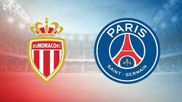

Prijzen
Mbappe is nog een jonge speler, maar hij heeft wel al veel prijzen gewonnen voor zijn leeftijd. hij heeft prijzen gewonnen die Messi en Ronaldo nog nooit hebben gewonnen. ze noemen hem daarom ook wel een de nieuwe Ronaldo. ik ga nu zijn prijzen opnoemen die hij heeft gewonnen in zijn carrière. die prijzen zijn:
met Monaco:
Ligue 1, 1x 2016/17
met Paris Saint-Germain:
Ligue 1, 3x 2017/18, 2018/19, 2019/20
Coupe de France, 2x 2017/18, 2019/20
Coupe de la Ligue, 2x 2017/18, 2019/20
Trophée des Champions, 2x 2019, 2020
Met Frankrijk onder 19:
UEFA EK onder 19, 1x 2016
met Frankrijk:
FIFA WK ,1x 2018
UEFA Nations League, 1x 2020/21
dus hij heeft nu al zoveel trofeeën gewonnen terwijl hij nog maar 23 jaar oud is.
Clubs

Mbappé is afkomstig uit de jeugdopleiding van AS Bondy. Hij debuteerde op 2 december 2015 op zestienjarige leeftijd in de Ligue 1, tegen SM Caen. Hij verving na 88 minuten de geblesseerde Fábio Coentrão.[3] Hij loste hiermee Thierry Henry af als jongste debutant in een officiële wedstrijd van Monaco. Op 20 februari 2016 nam Mbappé weer een record af van Henry, als jongste doelpuntenmaker ooit van Monaco.[4] Mbappé groeide uit tot basisspeler van Monaco. Hij maakte zijn Europees debuut op 27 september tegen Bayer 04 Leverkusen. Op 14 december 2016 scoorde hij de eerste hattrick van zijn carrière, in een bekerwedstrijd tegen Stade Rennais. Ook in de competitie scoorde Mbappé een hattrick dat seizoen, op 11 februari tegen FC Metz. Mbappé werd in het seizoen 2016/17 Frans landskampioen met de club. Hij droeg daar persoonlijk aan bij met onder meer vijftien doelpunten. Ook in de Champions League ging het Monaco voor de wind, de club schakelde onder meer Manchester City, waartegen Mbappé zijn eerste Europese doelpunt scoorde, uit en bereikte de halve finales die het verloor van Juventus. Tijdens deze campagne was Mbappé met zes doelpunten van groot belang. doordat hij zich had bewezen ging hij naar Paris Saint Germain en daar speelt hij tot aan nu. in 2020 is hij in de finale van de champions league gekomen maar die had hij verloren.
Internationaal
Mbappé maakte deel uit van de Franse selectie die onder leiding van bondscoach Didier Deschamps deelnam aan het WK 2018. Nadat hij in de groepsfase scoorde tegen Peru, waarmee hij de jongste doelpuntenmaker werd voor Frankrijk op een WK, deed hij dat nog tweemaal in de met 4–3 gewonnen achtste finale tegen Argentinië.[10] Hij maakte hiermee als eerste tiener twee goals in een WK-wedstrijd. Mbappé won met Frankrijk het WK door in de finale met 4–2 te winnen van Kroatië, waarbij hij zelf het vierde doelpunt maakte.
Op het EK 2020 wist Mbappé geen goal te scoren en miste de cruciale penalty in de achtste finale tegen Zwitserland. Het werd uiteindelijk 3-3, maar Zwitserland won na het nemen van penalty's.[12]
Na een mislukt EK 2020, hervatte Mbappé zich met Les Bleus in de UEFA Nations League 2020/21 tijdens de Final Four. In de halve finale tegen Belgïe keek Frankrijk tijdens de rust tegen een 2–0 achterstand aan, maar in de tweede helft knokten de Fransen zich, aan de hand van Kylian Mbappé en Karim Benzema, met een 2–3 overwinning volledig terug. In de finale won Frankrijk de tweede editie van de Nations League ten koste van Spanje.